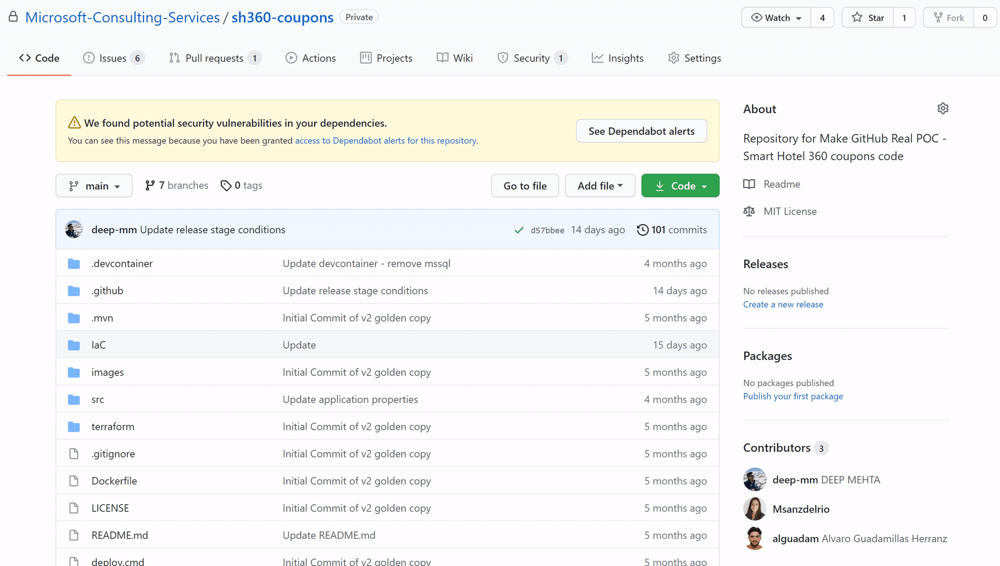
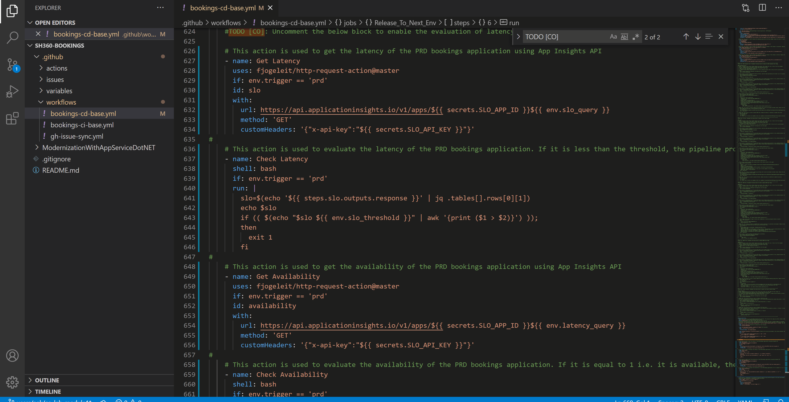
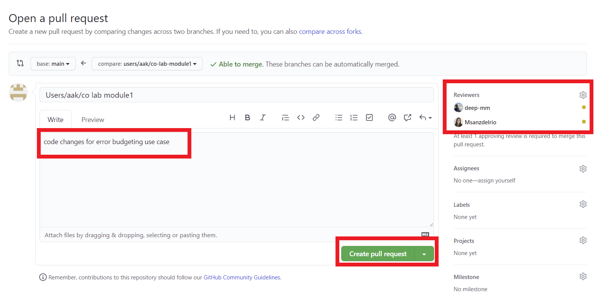
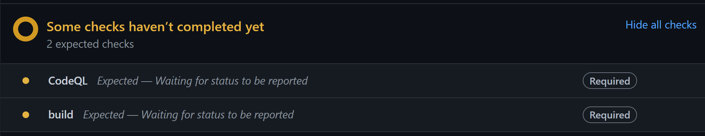

Module 1: Configure SLO checks in CD Workflow
Application Insights is an extensible Application Performance Management (APM) service in Azure Monitor to monitor live applications. It will automatically detect performance anomalies, and the powerful analytics tools will help you diagnose issues and to understand what users actually do with your app. It's designed to help you continuously improve performance and usability. It works for apps on a wide variety of platforms including .NET, Node.js, Java, and Python hosted on-premises, hybrid, or any public cloud. It integrates with your DevOps process, and has connection points to a variety of development tools.
Log Analytics is a tool in the Azure Monitor to edit and run log queries. You may write a simple query that returns a set of records, and then use sorting and filtering features to analyze them. You can write a more advanced query to perform statistical analysis and visualize the results in a chart to identify a particular trend. Whether you work with the results of your queries interactively or use them with other Azure Monitor features such as log query alerts or workbooks. Log Analytics is the tool that you're going to use write and test them.
To demonstrate error budgeting use case, we have to enable components to fetch and check predefined SLO metrics like latency and availability from Application Insights and Log Analytics in the GitHub workflow. Based on the metrics received, make decisions on whether or not to release in the production environment.
Exercise 1: Code changes to fetch availability and latency from Application Insights, and App Service HTTP logs from Log Analytics
In this exercise, we will enable the steps to get AppInsights API Id & API Key for PRD environment only, which is used in the last stage of Release_to_Next_Env to query AppInsights availability and latency of PRD environment and ensuring the environment is running as expected before releasing the updates.
Prerequisites - Exercise 1
- Continuous Security Labs must be completed.
Open the GitHub Codespaces if you have one already created. If not, go ahead and select
+ New codespace.
Create a new branch following the
users/{user_alias}/{purpose_of_the_branch}schema.Open the
/.github/workflows/environment-template.ymlfile. Search forSLO_Checkjob. Uncomment that block to enable the SLO checks. You can use shortcutCtrl + k + uto uncomment andCtrl + k + cto comment out a block of code.Now open the
.github/actions/continuous-operation/action.ymlfile. Below 4 actions in the yaml file will enable evaluation of latency and availability from Application Insights of PRD application.- Get Latency: This action is used to get the latency of the PRD application using App Insights API
- Check Latency: This action is used to evaluate the latency of the PRD application. If it is less than the threshold, which is set in the all-stages variable group, the pipeline proceeds to PRD or else it stops release to PRD.
- Get Availability: This action is used to get the availability of the PRD coupons application using App Insights API
- Check Availability: This action is used to evaluate the availability of the PRD coupons application. If it is equal to 1 i.e. it is available, the pipeline proceeds to PRD or else if it is equal to 0 it stops release to PRD.
Now go to the continuous-delivery composite action and take a look to the
Generate AppInsights API Keystep. when the Continuous delivery workflow runs in QA environment, it will generate an AppInsights API key and store it as a secret in a keyvault. This key will then be utilized to fetchLatencyandAvailabilityfrom AppInsights for the PRD application. We do this in QA because it is a mirror environment of PRD.Commit the code changes and push your branch to remote as described below:

Go to the GitHub code changes in browser and raise a pull request. Link both, the commit and pull request, to the specific task in ADO by using the
AB#{work_item_id}format. Put some meaningful description and put some reviewers from your team as shown below:
As part of the pull request check, the CI and CodeQl workflows will be triggered. Once the pull requests is approved and checks have been passed, you can merge the changes into the
mainbranch.
Once the pull request is approved and checks have been passed, you can merge the changes into the
mainbranch. As part of this merge, the CI workflow will be triggered again. If successfully executed, then the CD workflow will be triggered afterwards. Monitor the progress of the workflow fromActionstab.
Key takeaways
- Application Insights and Log Analytics can be utilized to get key SLO metrics. THey can be integrated into workflows to make decisions of release to production environment.